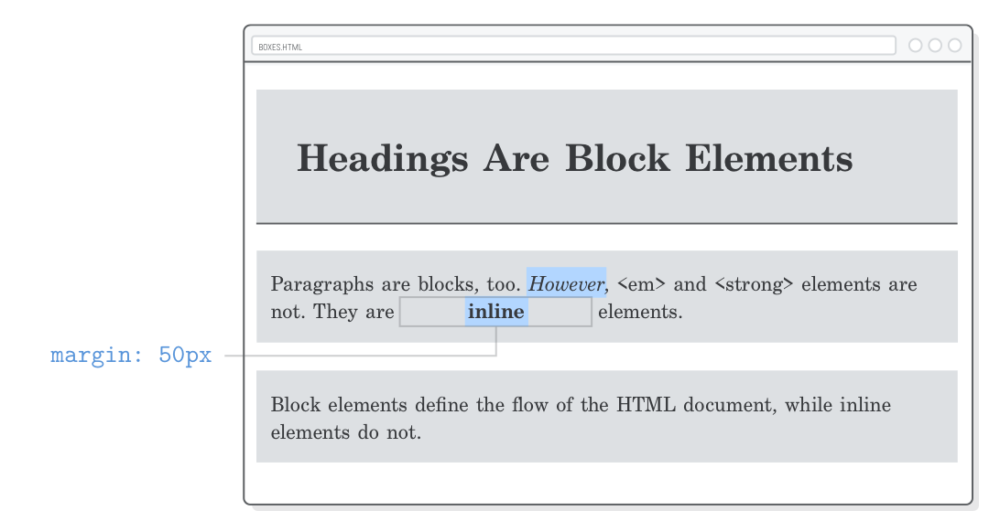

MARGINS
Margins define the space outside of an element’s border. Or, rather,
the space between a box and its surrounding boxes. Let’s add some space
to the bottom of each <p> element:
p {
padding: 20px 0 20px 10px;
margin-bottom: 50px; /* Add this */
}
This demonstrates a side-specific variant of the margin
property, but it also accepts the same shorthand
formats as padding.
Margins and padding can accomplish the same thing in a lot of situations, making it difficult to determine which one is the “right” choice. The most common reasons why you would pick one over the other are:
- The padding of a box has a background, while margins are always transparent.
- Padding is included in the click area of an element, while margins aren’t.
- Margins collapse vertically, while padding doesn’t (we’ll discuss this more in the next section).
If none of these help you decide whether to use padding over
margin, then don’t fret about it—just pick one. In
CSS, there’s often more than one way to solve your problem.
Margins on Inline Elements
One of the starkest contrasts between block-level elements and inline ones
is their handling of margins. Inline boxes completely ignore the top
and bottom margins of an element. For example, watch what happens when we add a
big margin to our <strong> element:
strong {
margin: 50px;
}
The horizontal margins display just like we’d expect, but
this doesn’t alter the vertical space around our
<strong> element one bit.

If we change margin to padding, we’ll
discover that this isn’t exactly the case for a box’s padding.
It’ll display the blue background; however, it won’t affect the
vertical layout of the surrounding boxes.

The rationale behind this goes back to the fact that inline boxes format runs of text inside of a block, and thus have limited impact on the overall layout of a page. If you want to play with the vertical space of a page, you must be working with block-level elements (luckily, we already know how to change an element’s box type).
So, before you start banging your head against the wall trying to figure out
why your top or bottom margin isn’t working, remember to check your
display property. Trust us, this will happen to you
eventually.